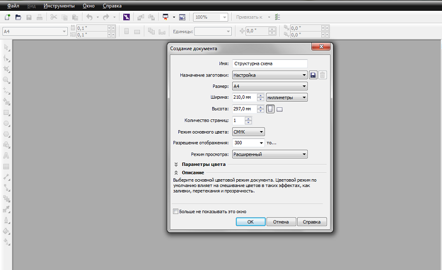
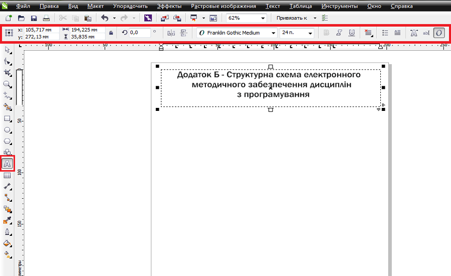
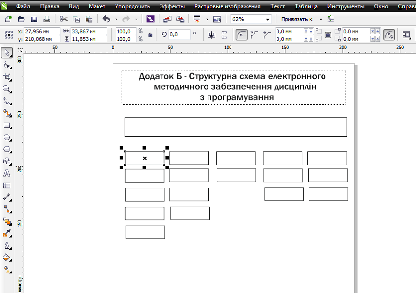
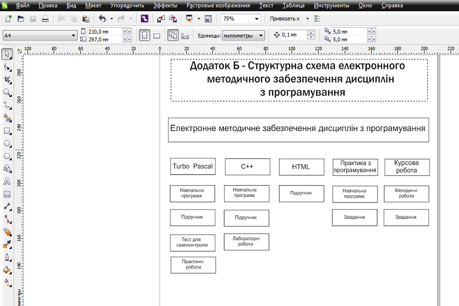
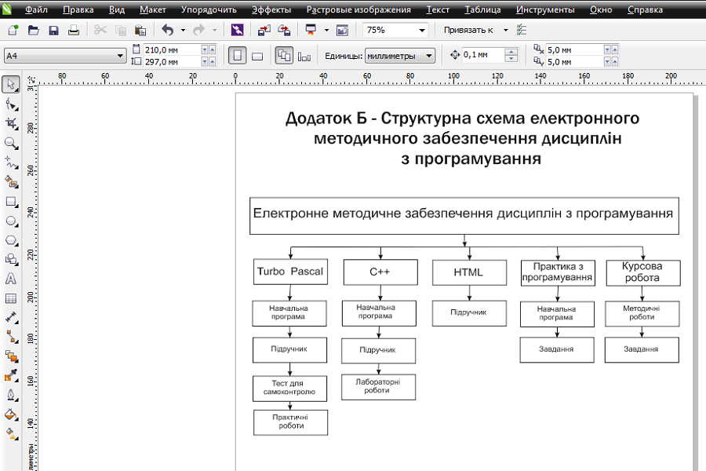

Теоретичний матеріал по виконанню практичних робіт
Створення структурної схемиВідкривши програму натискаємо «Файл», «Создать».
На панелі, що розташована зліва вибираемо «Текст», виділяємо потрібну нам область та вводимо сам текст. У верхній частині програми розташоване меню редагування тексту.
Далі на меню зліва обираємо «Прямоугольник» та розміщуємо усі необхідні блоки на аркуші.
Знову активуємо вже знайому вкладку «Текст» та заповнюємо раніше розміщенні прямокутні блоки.
На останньому етапі виконуємо з'єднання блоків за допомогою стрілок. В меню зліва обираємо «Прямая соиденительная линия», а також в меню, що розташоване вгорі обираємо стрілку потрібної форми та з'єднуємо блоки.«Добавить фигуру» та обрати «Добавить фигуру ниже».
